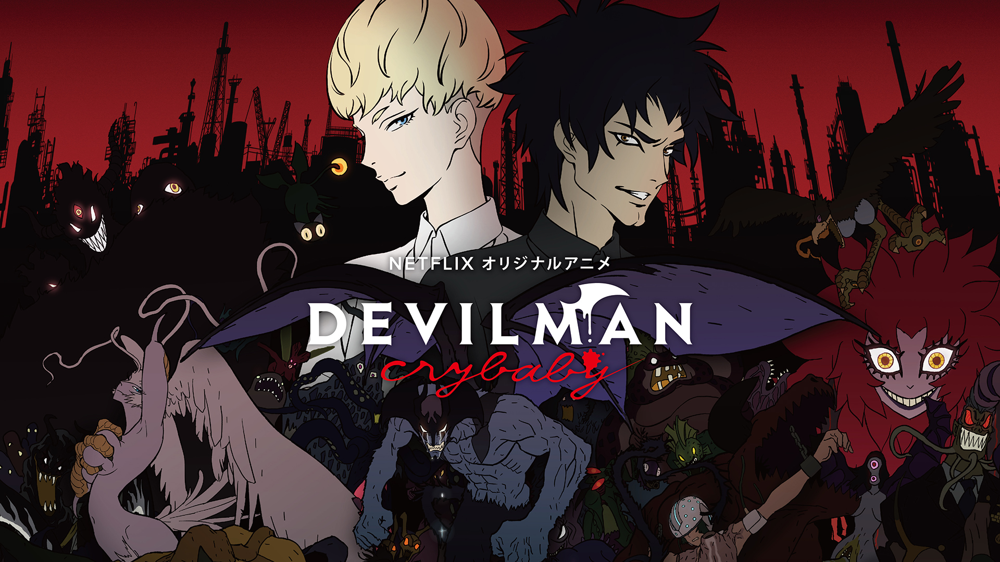
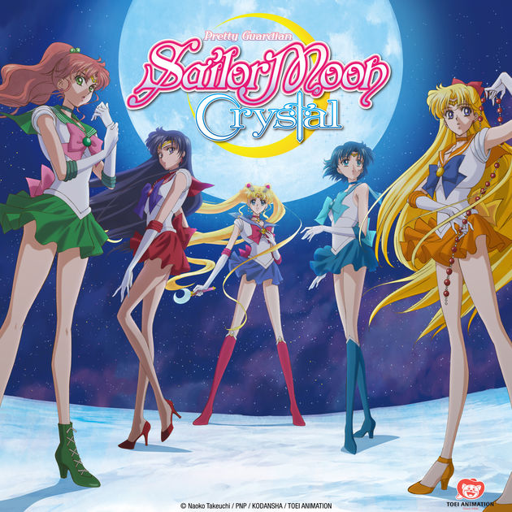
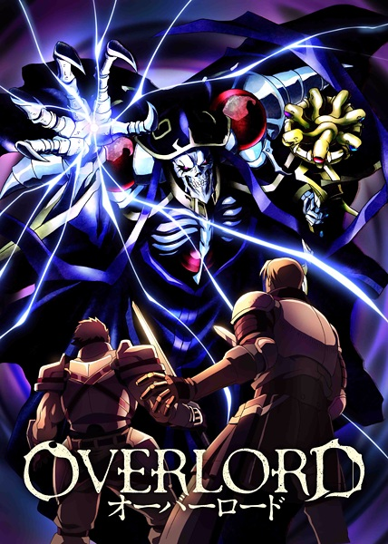

As time changes, technology improves and we try to get more of what we love, but something is different. All the anime is here, but what we felt when watching the shows has started to dwindle into only a memory. Of course there are shows that pop trying to relive the spark of the old,
but most that come out are just shadows of their former self.
The new anime that now come out aren't necessarily bad, but with the speed at which they are being produced, a lot of the shows don't feel like passion products anymore,
 but a rebrand of what we have already seen.